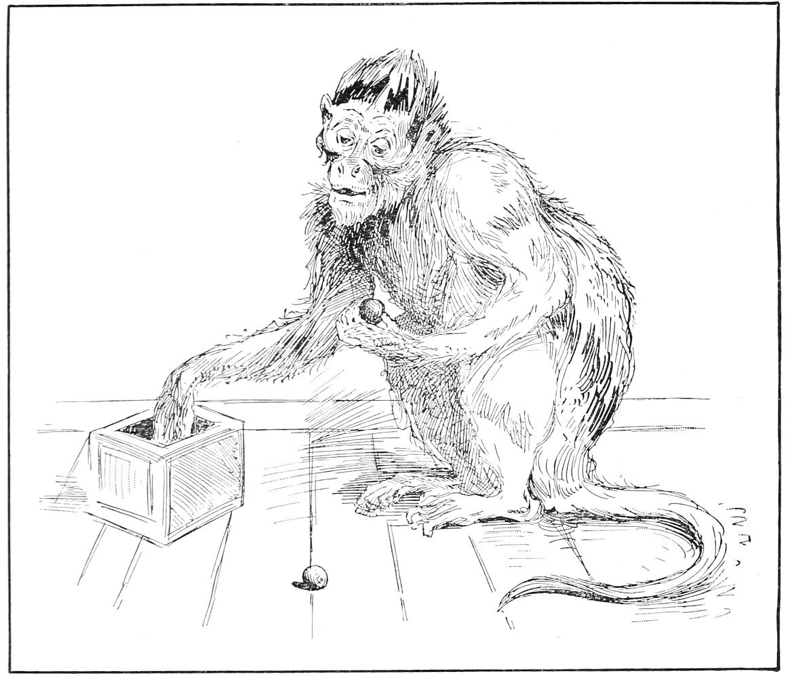

Monkey Ethics—Sense of Color—Monkeys Enumerate—First Principles of Art
Monkeys have a simple code of ethics. It is not by any means to be supposed that their sense of propriety or appreciation of color, form, dimension, or quality is of a high order; but that they have the rudiments upon which the higher cults of human society are based there is no doubt. Among the experiments that I performed along this line were some designed to ascertain the strength of these latent faculties or the degree to which these have been developed.
In order to ascertain whether or not monkeys have any choice of colors, I selected some bright-colored balls, marbles, candies, and bits of ribbon. Taking a piece of pasteboard, I placed on it a few pieces of candy of different colors. This was offered to a monkey to see if he would select a certain color. In order to avoid confusing him, I used only two colors at a time, but frequently shifted their places. This was to determine whether the color was chosen merely for convenience or for the sake of the color itself. By repeating this with a series of bright colors and frequent changing of their order it was ascertained in many instances that certain monkeys had a distinct choice of color. It was found that all monkeys do not select the same color, and also that the same monkey does not at all times choose the same. But, as a rule, bright green appeared to be the favorite color of the Capuchins, and their second choice was white. In a few instances white appeared to be their preference. This experiment was not confined to candies, nuts, or other eatables. They appeared to use about the same taste in selecting their toys. From the use of artificial flowers, it appeared that the choice of green was possibly associated with their selection of food. On one occasion I kept a cup for a monkey to drink milk from. On one side of this was a picture of some bright flowers and green leaves. The monkey would sometimes quit drinking the milk and try to pick the flowers off the side of the cup. The fact that she could not remove the flowers appeared to annoy her, and she seemed not to understand why she could not get hold of them.
In one test I used a board about two feet long, upon which were a few pieces of white and pink candies, mixed and arranged in four different places on the board. The monkey selected the white from each pile before taking the pink, except in one instance, in which the pink was taken first. In another experiment I took a white paper ball in one hand and a pink one in the other and held my hands out to the monkey. He selected the white one almost every time, although from time to time I changed hands with the balls. It was not a mere matter of convenience with the monkey, for he would sometimes reach over the hand containing the pink ball in order to obtain the white one. Most of these experiments were performed with the Capuchins, but some of them were made with the Rhesus. The fact that monkeys generally seem to be attracted by brilliant colors is doubtless due to the readiness with which these catch the attention; but when reduced to a choice between two colors, they do not seem to give preference to brilliant ones.
A unique but simple experiment was made in order to ascertain whether or not monkeys enumerate. I placed on a small platter one nut and a small piece of apple or carrot cut in the shape of a cube. On another platter were placed two or three such articles of like color and size. Holding the two just out of reach of the monkey, and changing hands from time to time, I observed that he tried to reach the platter containing the greater number, thus indicating that he discerned which contained the greater quantity or number of articles. It was long a matter of doubt as to whether it was by number or by quantity that his choice was controlled. But by taking one piece larger than the others and of different shape, it was ascertained that he appreciated the difference of quantity. Then, by taking a platter containing one piece and another platter containing several similar pieces, it was seen that he could distinguish singular from plural.

Monkey Learning to Count
Another experiment was to determine to what extent he was able to enumerate. To this end I constructed a small square box and made a hole in one side of it. The box was cushioned inside so that the contents would not rattle. In the box were placed three marbles of the same size and color. The hole was just large enough for the monkey to withdraw his hand with one marble at a time. After letting him play with these for a while, putting them into the box and taking them out, I abstracted one of the marbles and left the other two for him to play with. On taking them out of the box, he missed the absent one, felt in the box for it, rose, and looked where he had been sitting. Again he put his hand into the box and looked at me as if to say he had lost something. Failing to find it, he soon became reconciled to the loss and began to play with the remaining two. When he had become quite content with these, I abstracted a second one. Thereupon he instituted search and was quite unwilling to proceed without finding the lost marbles. He put his hand into the box, evidently in the hope of finding them. He would not continue to play with the one. I restored one of the marbles, and when he discovered that I could find the lost marble, he appealed to me in each instance to assist him. Then with his little, dirty, black fingers he insisted upon opening my lips to see if it was concealed in my mouth—the place where monkeys usually conceal stolen goods. I repeated this experiment many times, until quite convinced of his ability to count three. Another marble was then added to the number and he was allowed to play with the four until he became familiar with that number. But when one was taken from the four he did not appear to be greatly impressed with the loss. At times he seemed to be in doubt, but he did not worry much about it, though seeming to realize that something was wrong.
It is not to be supposed that monkeys have names for numerals, but they surely have a more or less distinct conception of plurality. The same fact is true of birds. It is said that all birds are able to count the eggs in their nests. This is certainly true of those that lay only three or four eggs.
During the time that these experiments were being made with monkeys in this country, the late Professor Romanes was making certain experiments with a chimpanzee in London. He succeeded in teaching her to count seven, so that she would count and deliver to him on demand any number from one up to seven. This she did without prompting, and usually without mistake.
Among different specimens of monkeys there seems to be a wide range of tastes. In this respect they vary much the same as human beings do. The same is true of their mental powers in general. With some monkeys the choice of color is much more definite and of dimension much more certain than in others, and most of them appear to assign to different numbers a difference of value.
Some monkeys are talkative and others taciturn. Some of them are vicious and some stolid, while others are as playful as kittens and as cheerful as sunshine. I regard the Cebus as the most intelligent of monkeys. In fact I have called him “The Caucasian of monkeys.” The new world monkeys seem to be more intelligent and more loquacious than the old world stock, but this remark does not include the anthropoid apes.
As a test of the musical taste of monkeys, I took three little bells and suspended them by a like number of strings. The bells were all alike except that from two of them the clappers had been removed. Dropping the bells through the meshes of the cage at a distance of ten or twelve inches apart, the monkey was allowed to play with them. He soon discovered the one containing the clapper. He played with it and became quite absorbed with it. He was then attracted to another part of the cage, during which time the position of the bells was changed. On his return he found his favorite bell without a clapper. He then turned to another, and then another, until he found the one with the clapper. This indicated that the sound emitted by the bell was at least a part of its attraction.
During the time that I used the phonograph in studying the monkeys, I repeated many musical records to them and found that some evinced fondness for the music, others were indifferent to it, and a few showed aversion to it. It appeared that the monkeys that were most attracted by musical sounds enjoy the repetition of a single note rather than the melody. It is possible that music, as we understand it, is too high an order of sense culture for them. The single note of a certain pitch seems to attract and afford pleasure to some of them, but they do not seem to appreciate rhythm or melody.
As monkeys discern the larger of two pieces of food, they may be said to have the perceptive faculty which enables them to appreciate dimension. As they are able to discern singular from plural, and two from three or more, they have, in that degree, the faculty of enumeration. As they are able to distinguish and select colors, they possess the first rudiment of art as dealing with color. As they are attracted or repelled by musical sounds, they may be said to possess the first rudiment of music. It must not be understood, however, that any claim is made that monkeys possess a high degree of mental culture; but it will be admitted that they possess the germs of mathematics as dealing with form, dimension, and number; of art, as dealing with form and color; of music, as dealing with tone and time. It is not probable that they have any names for any of these sensations, nor that they have any abstract ideas that are not drawn directly from experience. But as the concrete must precede the abstract in the development of reason, it is more than probable that these creatures now occupy a mental horizon such as man has once passed through in the course of his evolution. It does not require a great effort of the mind to appreciate the possibility that these feeble faculties, in constant use and under changed conditions, may develop into a higher degree of strength and usefulness. In fact we find in these creatures the embryo of every faculty of the human being, including those of reason and speech, through the exercise of which are developed the higher moral and social traits of man. They appear to have at least the raw material from which are made the highest attributes of the human mind, and I shall not contest with them the right of exclusive possession.